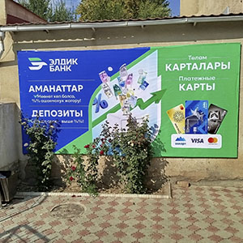
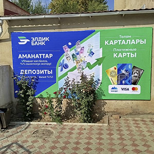

Широкоформатная печать – это технология, позволяющая создавать изображения и графику на больших форматах, значительно превосходящих стандартные размеры бумаги. Она широко применяется для рекламных баннеров, выставочных стендов, наружной рекламы, а также для создания декоративных элементов, карт, плакатов и других материалов.
Ключевое преимущество широкоформатной печати – возможность создавать эффектные изображения с высокой детализацией, которые способны привлечь внимание и передать необходимую информацию.
Высокоточная печать, в свою очередь, фокусируется на безупречном качестве изображения и точности передачи деталей. Эта технология часто применяется для создания высококачественной фотопечати, репродукций, плакатов, рекламных материалов, а также для упаковки и этикеток.
Ключевой особенностью высокоточной печати является использование высококачественных материалов, а также специальных красок и технологий, которые позволяют получить изображение с максимально точной цветопередачей и четкими линиями.
Объединяя возможности широкоформатной печати и высокоточной печати, можно создавать впечатляющие изображения и графику, которые отличаются не только масштабностью, но и безупречной детализацией.
Такой подход позволяет создавать уникальные рекламные кампании, оформлять выставки и мероприятия, а также создавать высококачественную продукцию для различных сфер деятельности.
Выбор технологии зависит от конкретных потребностей проекта, бюджета и желаемого качества изображения.
Широкоформатная и высокоточная печать: ключевые элементы современной визуальной коммуникации
Широкоформатная и высокоточная печать являются неотъемлемыми элементами современной визуальной коммуникации. Они позволяют создавать эффектные и информативные изображения, которые привлекают внимание, запоминаются и влияют на принятие решений.
От рекламы до декора, от дизайна до упаковки, широкоформатная и высокоточная печать играют важную роль в формировании визуального образа бренда, продукции и услуг.
Баннеры и перфобаннеры представляют собой эффективные инструменты рекламной и информационной кампании. Они широко используются для привлечения внимания к продуктам и услугам, оформления мероприятий и создания брендовой атмосферы. Широкоформатная печать позволяет создавать большие и яркие изображения, которые легко заметны даже издалека, что делает баннеры незаменимыми в наружной рекламе.
Перфобаннеры, в свою очередь, представляют собой специальный вид баннеров с отверстиями, которые обеспечивают циркуляцию воздуха. Это снижает риск повреждения баннера при сильном ветре и позволяет использовать их в условиях, где стандартные баннеры могут быть неэффективными. Они идеально подходят для установки на фасадах зданий и ограждениях, обеспечивая одновременно рекламу и защиту от неблагоприятных погодных условий.
Процесс широкоформатной печати отличается высоким качеством и точностью. Использование современных технологий и оборудования позволяет достигать ярких и насыщенных цветовых решений, а также детализированных изображений, что особенно важно для визуального восприятия рекламы. Высокоточная печать обеспечивает четкость и яркость каждого элемента дизайна, что способствует лучшему запоминанию информации потенциальными клиентами.
Кроме того, широкий формат печати открывает новые возможности для креативности. Баннеры могут принимать самые разные формы и размеры, что позволяет дизайнерам реализовать нестандартные идеи и необычные концепты. К примеру, использование света и объемных конструкций может существенно повысить эффект от рекламной кампании.
Еще одной важной особенностью перфобаннеров является их долговечность и прочность. Они изготовлены из качественных материалов, что позволяет им выдерживать нагрузки, связанные с погодными условиями и продолжительным сроком эксплуатации. Это делает их привлекательными для бизнеса, желающего инвестировать в надежную и эффективную рекламу.
Таким образом, баннеры и перфобаннеры, выполненные с использованием широкоформатной и высокоточной печати, являются важными инструментами для продвижения брендов. Они помогают не только донести информацию до целевой аудитории, но и создать яркий образ компании, способствуя успешному продвижению на рынке.
 



Широкоформатная печать на самоклеющейся пленке и перфопленке открывает новые горизонты для рекламного дизайна и оформления интерьеров. Эти технологии позволяют создавать яркие и насыщенные изображения, которые сразу же привлекают внимание. Широкоформатные принтеры способны воспроизводить высокое разрешение, что делает каждую деталь четкой и ясной. Это особенно важно для рекламы, где визуальное восприятие играет ключевую роль.
Самоклеющаяся пленка — это универсальный материал, практически незаменимый для наружной и внутренней рекламы. Она легко наносится на любые поверхности и прекрасно выдерживает различные атмосферные условия. Благодаря своей гибкости и прочности, такие наклейки могут использоваться как на сведении, так и на более сложных формах. Высокояркие цвета и высокая детализация делают печать на самоклеящейся пленке оптимальным выбором для создания вывесок, наклеек и рекламных материалов.
Перфопленка, в свою очередь, обладает уникальными свойствами, которые позволяют создавать эффектные визуальные элементы. Это идеальное решение для оконных наклеек и наружной рекламы. Такой подход активно используется в торговых центрах и офисах, где важно сохранять комфортную атмосферу, не прерывая рекламную коммуникацию.
Высокоточная печать на этих материалах обеспечивает прекрасное качество изображения. Технологии, используемые в широкоформатной печати, позволяют добиться впечатляющей четкости и детализации, что особенно важно для сложных графических элементов и текстов. Профессиональные принтеры, работающие с экологически чистыми чернилами, обеспечивают долговечность и яркость печати, что способствует удержанию внимания потребителей.
Также стоит отметить, что печать на самоклеящейся и перфопленке — это не только эффектная, но и экономически выгодная альтернатива традиционной рекламе. Быстрая печать и легкое нанесение уменьшают затраты на производственные процессы. Кроме того, возможность оперативного обновления информации и дизайна позволяет компаниям быстро реагировать на изменения в рыночной ситуации.
В заключение, широкоформатная печать на самоклеящейся пленке и перфопленке — это мощный инструмент для рекламы и оформления пространства. Эти технологии обеспечивают высокое качество, привлекательный внешний вид и практическое применение, что делает их востребованными в самых разных областях. Выбирая такие решения, компании могут эффективно продвигать свои товары и услуги, оставляя яркое впечатление у клиентов.
Широкоформатная печать — это современная технология, которая позволяет создавать яркие и впечатляющие постеры для различных целей. Постеры, выполненные с помощью этой технологии, могут быть использованы для рекламных кампаний, выставок, мероприятий, а также в оформлении интерьеров. Широкоформатная печать открывает безграничные возможности для дизайнеров и маркетологов, позволяя им реализовывать самые смелые идеи.
Одним из главных преимуществ широкоформатной печати является возможность печати на разнообразных материалах. В отличие от традиционных методов, которые ограничивают выбор бумаги, широкоформатная печать может использовать пленку, холст, флаговое полотно и другие специализированные материалы. Это позволяет создавать постеры, которые не только привлекают внимание, но и обладают высокой прочностью и стойкостью к внешним воздействиям.
Кроме того, широкоформатная печать обеспечивает высокое качество изображения. Современные печатные машины способны воспроизводить мельчайшие детали и яркие цвета, что делает постеры более выразительными. Это особенно важно для рекламных материалов, где качество изображения способно повлиять на восприятие бренда и желание клиента совершить покупку.
Другим существенным преимуществом является скорость производства. При использовании широкоформатной печати можно значительно сократить время на изготовление постеров - от идеи до готового продукта. Это особенно актуально в условиях быстро меняющегося рынка, где оперативность порой играет ключевую роль.
Эффективность постеров в маркетинге и рекламе тоже нельзя недооценивать. Они привлекают внимание и способны мгновенно донести сообщение до целевой аудитории. Яркие изображения и лаконичные слоганы в сочетании с качественной печатью делают постеры мощным инструментом для продвижения товаров и услуг.
Таким образом, широкоформатная печать постеров представляет собой универсальное и эффективное решение для оформления и рекламы. С помощью этой технологии можно создать уникальные, привлекательные и информативные материалы, которые будут выделяться на фоне конкуренции и запоминаться целевой аудиторией.
Наклейки на окна стали неотъемлемой частью современного оформления офисов, магазинов и жилых помещений. Широкоформатная печать открывает новые горизонты для креативного использования оконных пространств. С помощью данного метода можно создать яркие и запоминающиеся изображения, которые не только украсят интерьер, но и привлекут внимание потенциальных клиентов.
Одним из главных преимуществ наклеек на окна является их универсальность. Их можно использовать как для коммерческих целей, так и для личного оформления. На витринах магазинов можно размещать рекламные акции, а в офисах — мотивационные цитаты или фирменные логотипы. Широкоформатная печать позволяет передать все детали изображений, что способствует повышению интереса к продукции или услугам.
Материалы, используемые для печати наклеек, обладают высокой стойкостью к внешним воздействиям. Они не выгорают на солнце, не боятся дождя и морозов, что делает наклейки идеальными для наружного применения. Кроме того, такие изделия легко наклеиваются и снимаются при необходимости, не оставляя следов. Это особенно важно для арендаторов, которым нужно изменять оформление пространства периодически.
Процесс создания наклеек на окна начинается с разработки уникального дизайна. Специалисты по графическому дизайну могут помочь воплотить в жизнь любую идею, соответствующую требованиям клиента. После утверждения дизайна осуществляется печать на современном оборудовании, что гарантирует высокое качество и насыщенность цветов. Затем наклейки нарезаются и готовятся к установке.
Широкоформатные наклейки на окна привносят в пространство не только эстетику, но и функциональность. Они могут выполнять роль солнцезащитных пленок, уменьшая яркость света и защищая от перегрева. Это особенно актуально для офисов, где важен комфорт сотрудников. Таким образом, наклейки не только украшают, но и делают помещение более комфортным для работы и отдыха.
В заключение, наклейки на окна, выполненные с помощью широкоформатной печати, — это эффективное и креативное решение для оформления любого пространства. Они позволяют сочетать красоту и практичность, что делает их востребованными в различных сферах. Инвестируя в качественные наклейки, можно существенно улучшить визуальный облик и функциональность помещения, привлекая к нему больше внимания.
Брендирование автомобилей с использованием широкоформатной печати стало популярным и эффективным способом продвижения товаров и услуг. Этот метод позволяет создать яркое и запоминающееся визуальное представление компании, привлекая внимание потенциальных клиентов на улице и в деловых центрах. Брендированные автомобили становятся мобильными рекламными носителями, которые могут охватить широкую аудиторию.
Широкоформатная печать предоставляет множество возможностей для дизайна. С помощью современных технологий можно напечатать изображения высокого качества с яркими цветами и четкими деталями. Это позволяет создавать уникальные и креативные дизайны, которые отражают индивидуальность компании и ее философию. Кроме того, элементы брендирования могут варьироваться от небольших логотипов на дверях до масштабных изображений, покрывающих весь автомобиль.
Одним из главных преимуществ брендирования автомобилей является его высокая эффективность. Поездки по городу или вне его обеспечивают постоянную видимость рекламы, что способствует формированию узнаваемости бренда. Автомобили с брендированием могут быть использованы как для внутренних, так и для внешних маркетинговых кампаний, увеличивая охват аудитории в самых разных местах.
Процесс брендирования включает в себя несколько этапов: разработка дизайна, подготовка макета и печать. На этапе разработки важно учитывать требования клиента и специфику его бизнеса, чтобы создать дизайн, который максимально эффективно передаст нужное сообщение. Использование качественных материалов для печати и ламинирования также играет ключевую роль, так как это влияет на долговечность и устойчивость изображения к внешним воздействиям.
Брендирование автомобилей можно адаптировать под любые бизнес-цели, от увеличения продаж до повышения авторитета компании на рынке. Разнообразие форматов и стилей позволяет каждому бизнесу найти свой уникальный подход, который будет работать на его имидж. Таким образом, брендирование с помощью широкоформатной печати является не только способом привлечения внимания, но и инвестицией в долгосрочную стратегию по укреплению позиций на рынке.
В заключение, брендирование автомобилей с применением широкоформатной печати — это мощный инструмент для компаний, стремящихся выделиться среди конкурентов. Высокое качество изображения, креативный подход и мобильность делают этот метод незаменимым в современном маркетинге. Инвестируя в брендирование автомобилей, бизнес получает возможность эффективно донести свою пропозицию до потребителей и создать положительный имидж.
Фотообои с широкоформатной печатью становятся все более популярными в современных интерьерах. Они позволяют создавать уникальные и яркие изображения, способные преобразить пространство любой комнаты. Благодаря современным технологиям печати, стало возможным воспроизводить детализированные и насыщенные картинки на больших полотнах, что открывает новые горизонты для дизайнеров и владельцев жилья.
В процессе производства фотообоев используется высококачественная фундаментальная основа и специальные чернила, которые обеспечивают долговечность и яркость изображений. Широкоформатная печать позволяет получить безшовные полотна, что делает покрытие стен более эстетичным и приятным на вид. Вы можете выбрать как готовые решения, так и заказать индивидуальный дизайн, что позволяет воплотить в жизнь самые смелые идеи.
Одним из главных преимуществ фотообоев является их универсальность. Они отлично подходят для любых пространств — от жилых комнат до офисов и коммерческих помещений. С помощью фотообоев можно создать атмосферу уюта, стиля или даже вдохновения, в зависимости от выбранного изображения. Горы, леса, городские пейзажи или абстракция — выбор зависит только от ваших предпочтений.
Кроме того, установка фотообоев с широкоформатной печатью достаточно проста. Многие производители предлагают обои с самоклеящимся слоем, что упрощает процесс наклеивания и не требует специальных навыков. Также они легко удаляются без повреждения стен, что делает их идеальным вариантом для арендуемого жилья.
Уход за фотообоями тоже не вызывает затруднений. Современные материалы устойчивы к повреждениям, влаге и ультрафиолетовому излучению. С помощью мягкой ткани или губки можно легко очистить поверхность от загрязнений, что позволяет сохранять первоначальный вид покрытия на протяжении долгого времени.
В заключение, фотообои с широкоформатной печатью — это отличное решение для тех, кто хочет обновить интерьер, сделав его более выразительным и живым. Их разнообразие, легкость в установке и уходе делают фотообои не только стильным, но и практичным выбором для любого домашнего или офисного пространства.

Широкоформатная печать на холсте – это современный способ создания ярких, выразительных изображений, который успешно используется как в коммерческих, так и в творческих целях. Эта технология позволяет получать высококачественные графические работы большого формата, которые прекрасно подходят для оформления интерьеров, выставок и различных мероприятий. Холст, как основной материал для печати, придаёт изображениям особую текстуру и глубину, что делает их более привлекательными.
Процесс печати на холсте начинается с выбора изображения и его подготовки. В зависимости от назначения конечного продукта, может использоваться как цифровая графика, так и фотографии. Важно правильно настроить разрешение и цветовую палитру, чтобы гарантировать максимальную детализацию и насыщенность цветов. Современные принтеры используют специальные чернила, которые обеспечивают долговечность и устойчивость к выцветанию, что делает такие изделия идеальными для долгосрочного использования.
После завершения печати холст часто натягивается на деревянные подрамники. Этот этап является ключевым для создания финального продукта: правильно выполненное натяжение позволяет избежать складок и деформаций, а также придаёт картине законченный вид. Кроме того, художественные изображения на холсте могут дополнительно обрабатываться лаком, что придаёт им блеск и защищает от внешних воздействий.
Широкоформатная печать на холсте широко используется в рекламе, где эффектные изображения способны привлечь внимание клиентов и создать уникальный имидж бренда. Постеры, баннеры и рекламные стенды, выполненные с помощью этой технологии, способны передать информацию ярко и запоминающе. В последние годы наблюдается рост интереса к созданию интерьерных картин, что также связано с популярностью персональных проектов и уникального дизайна.
В художественной сфере печать на холсте становится любимым инструментом для многих авторов. Художники могут создавать тиражи своих работ, что обеспечивает им дополнительный доход. Кроме того, такие картины часто становятся востребованными на выставках и ярмарках, где художники стремятся представить свои произведения как можно широкой аудитории.
Таким образом, широкоформатная печать на холсте открывает новые горизонты как для бизнеса, так и для творчества. Она сочетает в себе качество, доступность и эстетическое удовольствие, позволяя создавать уникальные, впечатляющие работы. Независимо от цели использования, печать на холсте остаётся одним из наиболее перспективных направлений в мире печати и искусства.